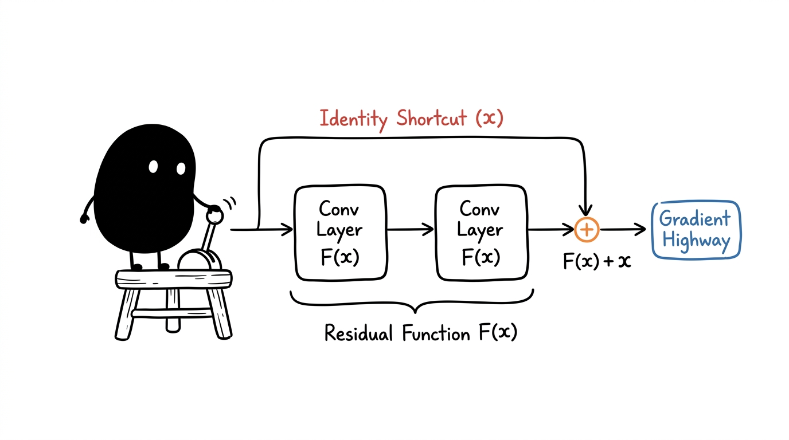

Understanding reference architectures, residual learning mechanics, and gradient propagation.
In empirical machine learning, a baseline is a well-characterized reference architecture evaluated under standardized training conditions. Rather than inventing novel components immediately, practitioners establish a baseline to measure the true performance floor and isolate whether subsequent architectural changes yield genuine statistical improvements.
For image classification benchmarks like SVHN and CIFAR-10, convolutional baselines range from classical shallow networks like LeNet-5 to standard residual topologies like ResNet-18. A baseline anchors error analysis, highlighting failure modes such as overfitting, spatial distractor interference, or optimization stagnation before introducing heavier backbones.
As neural networks grow deeper, repeated matrix multiplications during backpropagation cause gradient signals to either explode or decay exponentially toward zero. Even with batch normalization and normalized weight initializations mitigating vanishing gradients, extremely deep plain networks exhibit a degradation problem: adding more layers leads to higher training error, because standard layers struggle to fit an identity mapping \mathcal{H}(x) = x.
Residual networks resolve this by reformulating the objective. Instead of requiring stacked layers to approximate an unconstrained mapping \mathcal{H}(x), the network optimizes a residual mapping \mathcal{F}(x) = \mathcal{H}(x) - x.
When an identity mapping is optimal, gradient descent simply drives the residual weights \mathcal{F}(x) \rightarrow 0, leaving the identity path intact without learning degradation.

ResNet-18 consists of exactly 18 parameterized weight layers: one 3×3 convolutional input stem, eight 2-layer residual basic blocks organized into four resolution stages, and one final fully connected linear layer.
flowchart LR
In["Input (32x32x3)"] --> Stem["Stem Conv 3x3 (s=1)"]
Stem --> S1["Stage 1 (2 Blocks, 64-d)"]
S1 --> S2["Stage 2 (2 Blocks, 128-d, s=2)"]
S2 --> S3["Stage 3 (2 Blocks, 256-d, s=2)"]
S3 --> S4["Stage 4 (2 Blocks, 512-d, s=2)"]
S4 --> Pool["Global Avg Pool"]
Pool --> FC["Linear FC (10-d)"]
Each basic residual block contains two 3×3 convolutions with batch normalization and ReLU activations. Across the four stages, feature spatial dimensions halve while channel capacities double (64 \rightarrow 128 \rightarrow 256 \rightarrow 512), yielding a total parameter budget of approximately 11.2 million parameters.
import torch
import torch.nn as nn
class BasicBlock(nn.Module):
def __init__(self, in_planes, planes, stride=1):
super().__init__()
self.conv1 = nn.Conv2d(in_planes, planes, kernel_size=3, stride=stride, padding=1, bias=False)
self.bn1 = nn.BatchNorm2d(planes)
self.conv2 = nn.Conv2d(planes, planes, kernel_size=3, stride=1, padding=1, bias=False)
self.bn2 = nn.BatchNorm2d(planes)
self.shortcut = nn.Sequential()
if stride != 1 or in_planes != planes:
self.shortcut = nn.Sequential(
nn.Conv2d(in_planes, planes, kernel_size=1, stride=stride, bias=False),
nn.BatchNorm2d(planes)
)
def forward(self, x):
out = torch.relu(self.bn1(self.conv1(x)))
out = self.bn2(self.conv2(out))
out += self.shortcut(x)
return torch.relu(out)
Tracing a single 32×32 RGB SVHN image through the network demonstrates how dimensions transform across each stage.
For a modified CIFAR/SVHN stem (3×3 conv with stride 1, padding 1), the spatial resolution is preserved at 32×32:
During backpropagation, the gradient of the loss \mathcal{L} with respect to the input x of a residual block decomposes into:
The + \frac{\partial \mathcal{L}}{\partial \mathcal{H}} term guarantees an uninterrupted gradient highway back to early layers, preventing gradient collapse regardless of network depth.